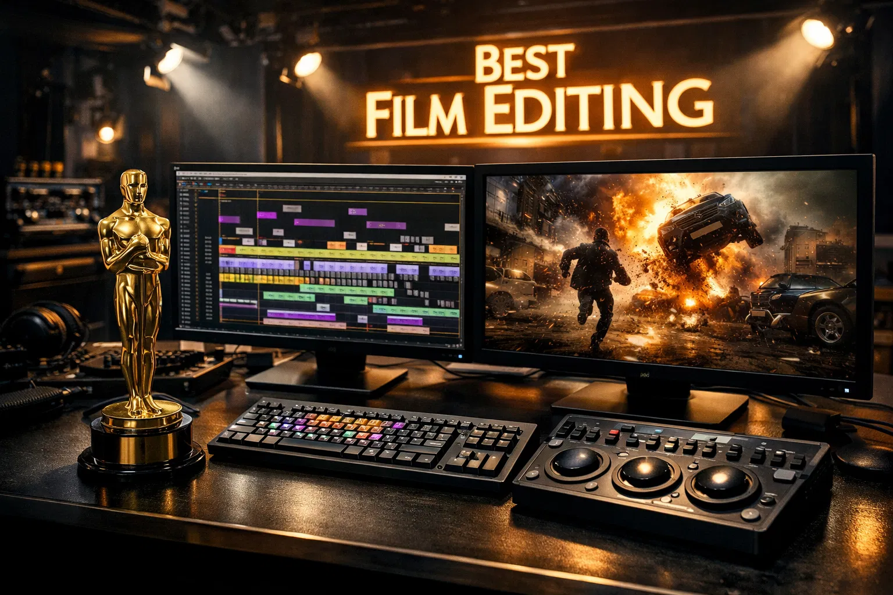

98th Annual Academy Awards
Melhor Montagem
Conheça os candidatos à Premiação do Oscar 2026 por Melhor Montagem.

Vencedor
Uma Batalha Após a Outra
Montador: Andy Jurgensen.
O Estilo: Paul Thomas Anderson é mestre no uso do tempo. A montagem aqui é mais deliberada, focada em planos-sequência que fluem organicamente para cortes abruptos em momentos de violência ou tensão política.
Destaque: A habilidade de costurar as múltiplas subtramas e o vasto elenco de apoio sem perder o foco na jornada emocional de Leonardo DiCaprio, equilibrando o épico com o íntimo.

F1: O Filme
Montador: Eddie Hamilton
O Estilo: Uma aula de montagem de ação. O desafio aqui foi organizar as centenas de horas de filmagens de câmeras instaladas nos carros reais para criar sequências de corrida que sejam compreensíveis e, ao mesmo tempo, viscerais.
Destaque: A alternância perfeita entre os planos fechados nos rostos dos pilotos (focando na força G e no suor) e os planos abertos que estabelecem a estratégia da corrida, mantendo a clareza geográfica em alta velocidade.

Marty Supreme
Montador: Ronald Bronstein
O Estilo: É a montagem mais energética da temporada. O filme utiliza cortes rápidos e rítmicos para simular a velocidade de uma partida de pingue-pongue profissional.
Destaque: A forma como a edição sincroniza o som das batidas da bola com a trilha sonora, criando uma experiência quase musical e altamente viciante que mantém o espectador em constante estado de euforia.

Pecadores (Sinners)
Montadora: Kelley Dixon.
O Estilo: Focado na construção da tensão gótica. A montagem utiliza o "ritmo do medo", segurando cortes um pouco além do esperado para criar desconforto ou cortando rapidamente durante as manifestações do mal.
Destaque: O uso inteligente de flashbacks ou visões fragmentadas que ajudam a construir o mistério da cidade sem entregar a resposta cedo demais, mantendo o público em um estado de paranoia constante.

Valor Sentimental
Montador: Olivier Bugge Coutté.
O Estilo: Uma montagem introspectiva e sensível. Joachim Trier foca no tempo subjetivo — como a memória e a emoção alteram nossa percepção do presente.
Destaque: As transições entre os momentos de drama familiar pesado e as sequências mais leves, quase de comédia de costumes, que dão ao filme um ritmo humano e imprevisível, típico do cinema europeu de alta linhagem.